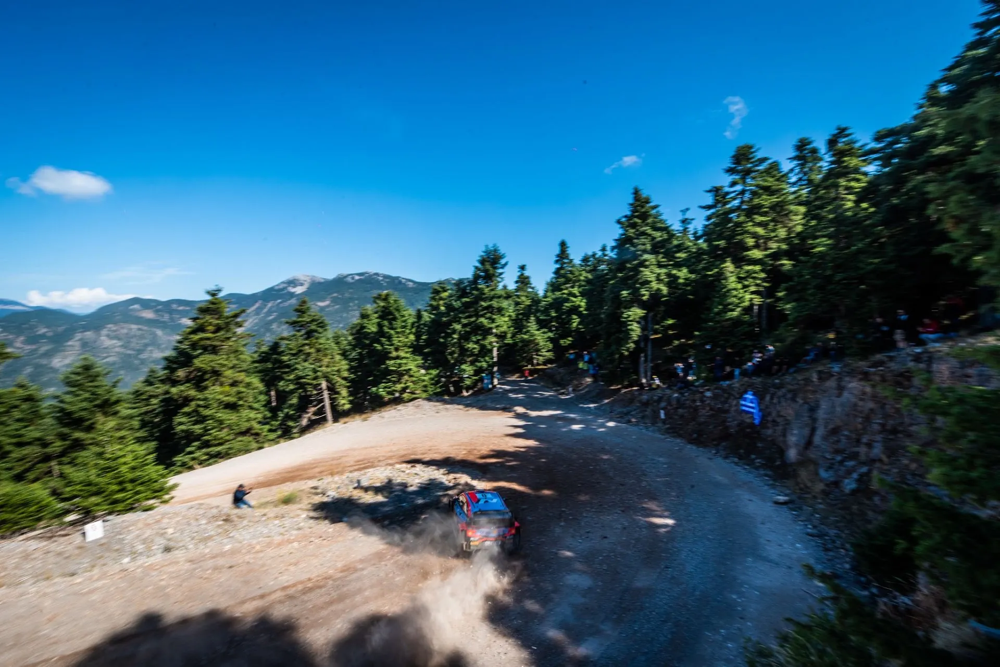
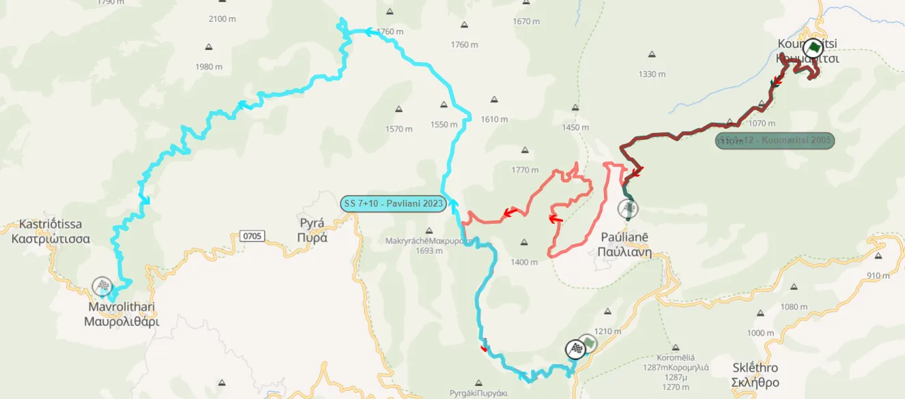
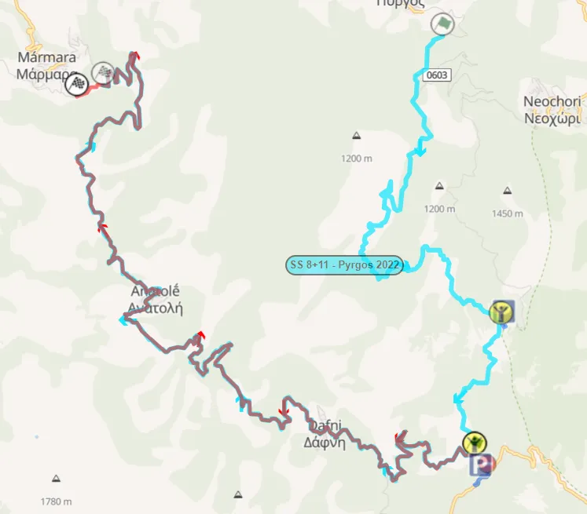
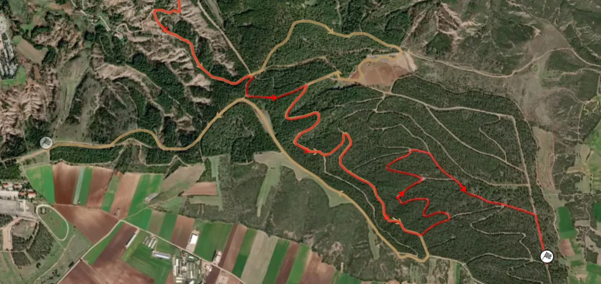
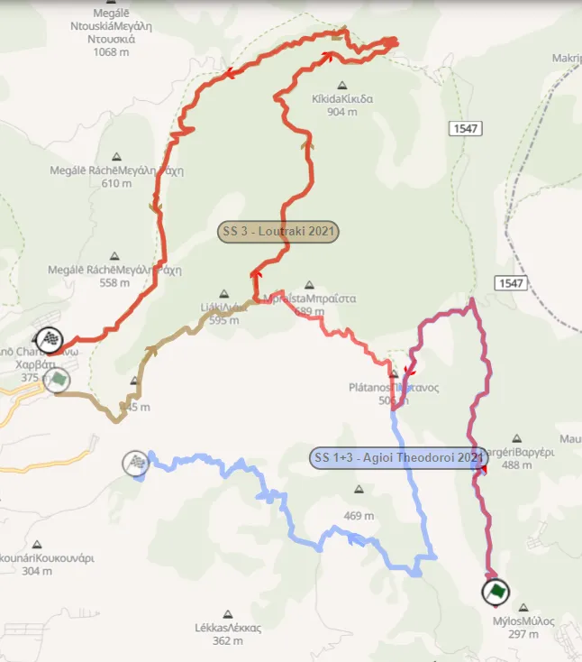
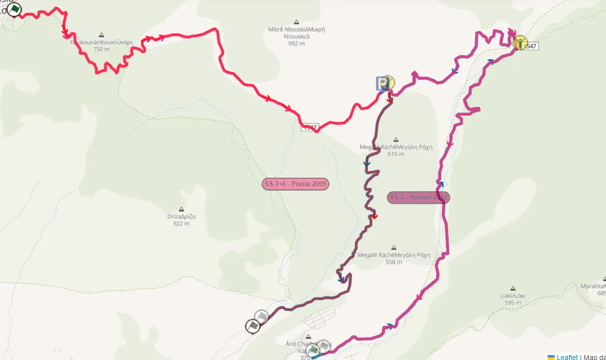
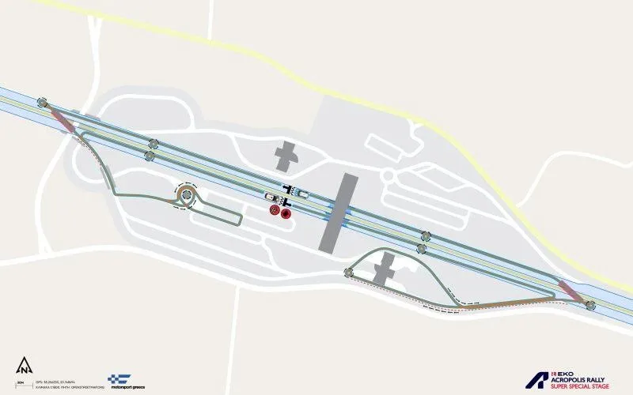

Rally Acropolis 2024 - Route Analysis
The 68th edition of the Acropolis Rally, the 4th since the event's return in the WRC calendar, is somewhat of a shake-up compared to previous years. Gone is the ceremonial start under the Acropolis, gone is the iconic Karoutes/Bauxites stage and gone are the many one-pass stages on Friday, which we will instead see on Saturday. We also see the return of some stages that weren't used last year, as well as modified versions of some that featured in the most recent edition of the rally. This is also set to be the last time the event will be held in Autumn, with Acropolis set to be back on its normal calendar slot, in June, for 2025.
Thursday
Thursday is rather short this year, with only the Shakedown and the Ceremonial Start in Lamia. The Lygaria shakedown is the same as 2022, (it was cancelled due to torrential rain in 2023). It's a decent representation of the roads for the rally, but not great for spectators, as there's no access points in the stage. After the Shakedown, the crews will not have to travel all the way down to Athens, instead they'll just have to go just outside of the Service Park for the Ceremonial Start.
Onboard of the Shakedown
Friday
Friday is the longest day of the rally, with 135 competitive kilometres. It's comprised of two passes of 3 stages, so unlike previous years, the championship leader will not suffer as much. It's a day similar to Day 3 (Saturday) of the 2022 version of the rally.
SS1/4 Ano Pavliani is the first stage of the event, and it has never been used in this format before. It's essentially a combination of the Koumaritsi stage that's not been used since 2005 and the classic Pavliani stage that was also used last year. The organisers opted to use this over the classic version, because of potential issues with rain and fog, like in 2023 and 2021, which made the stage very difficult to recce. That means the iconic Katavothres section, and the section where Thierry Neuville's rally came to an end last year, will be absent.

The 2024 Ano Pavliani stage.
With green you can see the Koumaritsi stage, and with light blue the Pavliani stage.
The stage starts off with a 7km uphill section, with a semi-fast and flowing road. The next 10km have never been used before. It's still uphill, and from the satellite images, the stage turns to a seemingly narrower road, that after a short technical section, becomes quite fast for roughly 2km or so, before another tricky, sinuous at times 6km section. After that, the stage rejoins the normal Pavliani route, only in reverse, something that we haven't seen in the WRC since 1996! The stage now goes downhill, in a medium fast road, with a few faster sections towards the finish.
The first 7 kilometres of the stage are the same as the Koumaritsi stage from 2005.
Onboard of the brand new Ano Pavliani Stage.
SS2/5 Dafni is the second half of the Pyrgos stage that was used in 2021 and 2022. It's a very technical stage, and it's likely to be one of the slowest of the rally!

With light blue you can see the Pyrgos stage, and with red is this year's Dafni stage.
The stage features plenty of elevation changes, as well as rhythm changes. It starts off with a very technical section, on a rough, narrow road. About 5km from the start, the stage passes through a village, with the crews having to navigate a narrow tarmac road that goes through it! After the village, the stage becomes faster momentarily, before it becomes technical again. After another pass through a village at the 13km mark, the road becomes faster and wider, ending with a series of hairpins before the village of Marmara.
Onboard of the stage. It was also used in 2021 on a national rally.
The last stage of the loop is the famous SS3/6 Tarzan. The stage uses the same route as ever since 2021. This is the first time it's ever used on Friday, and it could be the roughest stage of the loop.
Onboard of the stage from 2021.
Tarzan is a technical and rough stage. It starts off in a semi-wide road, that is technical and mostly medium speed. The character of the stage remains unchanged until about 15km. The stage then meets the road from the Rovoliari village, and it becomes faster and smoother until the finish. Depending on the weather, there could be some standing water and mud, as the stage is deep in a forest.
Saturday
Saturday might be rather short in terms of kilometres, at just 117, but it's absolutely massive in terms of liaison sections, with the crews having to tackle almost 600km of road sections. There's also no service, and only one repeat stage!
SS7 Rengini is last year's Elatia stage, only in reverse. It is the longest stage of the rally at 28.67km. It uses a mix of smooth and rough, and slow and fast roads. Ιt starts off with a short fast section on a narrow road, and then becomes technical and sinuous. 5 kilometres in, there's the famous "Nera" water splash, after which, the road becomes faster, but narrower, and very rough. The stage keeps switching between faster and more technical sections, with quite rough, rocky sections and different surfaces. Last year there were many ruts in the more loose parts of the stage. At 18km, the road changes character completely. It joins the route of the 2021 Elatia stage, only in reverse. The remaining 10km are on a fast and smooth, downhill road until the finish.
Onboard of the stage.
The Elatia watersplash from last year. It will be ran in the opposite direction.
SS8 Thiva returns after not featuring in the past 3 editions of the rally, using a different finish compared to the 2021 version. It's a stage that has an exceptional amount of character changes and uses a great deal of different roads, as the stage itself passes through a hill with numerous trails. It utilises a variety of rough, and relatively smooth sections.
The jump near the start of the stage from 2012.
The start of the stage has a technical, almost mickey mouse section, with the stage sort of looping onto the road where it started. After that, the stage becomes faster, with a small jump also, in a relatively narrow road. It keeps changing from narrow roads, to wider roads, and from slower ones to faster ones all the time. Unlike in previous years, the stage will not be passing through the Thiva shooting range. Also unlike in 2021, where the stage ended on a fast road, this year it deviates from the "shared" route at 20km, and turns left to a twisty road, where it ends on an almost straight road with a lot of crests!

The differences between Thiva (2021) in gold and the 2024 version in red.
Onboard of the new version of the Thiva stage.
After a long liaison, the crews make it to SS9/11 Aghii Theodoroi. The stage is essentially a combination of the 2 stages in the Loutraki area from 2021, with this one following the 2021 version of Aghii Theodoroi, but with the difference that it turns right, not left, at 7km, avoiding the tarmac bit, and the very slow technical section. That section is the same one that had to be trimmed from the 2023 Loutraki stage, due to the heavy rain. The second pass will be very difficult for the crews, as the stage will be quite rough and rutted, leaving many exposed rocks!

The 2024 Aghii Theodoroi stage, and the parts shared with the stages in the Loutraki area from 2021.
The stage starts off uphill, in a sandy, technical, medium-wide road. After about 3km, the stage becomes narrower, and significantly rougher, with many exposed rocks. There are also a few "kick bumps" that make the cars go airborne. At 4.4km there is a jump, that was a hot-spot amongst photographers in 2021. After the jump the stage speeds up for roughly a kilometre or so, and becomes somewhat smoother. After a hairpin left, the road, becomes very rough and rocky, at parts exposing the old cobbled road that was constructed in World War 2. After a short tarmac section, the stage turns right to a road that was used as a stage in June's Rally Korinthou.
Onboard of the Aghii Theodoroi stage.
Following that, the stage changes character completely. It becomes faster, and a lot more flowing, with many cambered turns and long corners. At 10.6km the stage joins the route of the Loutraki stage from 2021. It retains the same character until about the 14 kilometre mark, where it becomes twistier and more narrow, and also goes downhill. At 16.6km there is a very technical and narrow part with a double hairpin. It continues to be narrow and technical until about 21km in, where it widens and becomes faster and more flowing until the finish.
Parts of Loutraki and Aghii Theodoroi were used in this year's Rally Korinthou, that was part of the Greek Championship.
SS10 Loutraki is another one pass stage on Saturday. It uses roads that have been used many times before in the Acropolis, and it's essentially a combination of last year's Pissia stage, and Harvati from 2022. It is the most common layout of the Pissia stage that is used in national rallies. The stage has also been ran before in the Acropolis under different names, like Pissia, Harvati and New Pissia.

Loutraki's 2024 route, and the sections shared with Pissia (2023) and Harvati (2022)
The stage is initially technical and twisty for the first three kilometres, before becoming more fast and flowing until about 9km in. The stage then joins the route from the 2022 Harvati stage. It's a very twisty, sinuous at times, road, that is also very narrow! The stage runs parallel to a dried up river (or not so dried up depending on the weather), with the road having a clifface on one side, and a big drop on the other.
Onboard of SS10 Loutraki
After the second pass of Agioi Theodoroi, the day ends with the superspecial of the event, SS12 EKO SSS.

The layout of the SSS this year.
Sunday
Sunday is the shortest day of the rally, with just 54 competitive kilometres. What the day lacks in length though, makes up in quality of stages! Inohori is a brand new stage that hasn't been used before, and Eleftherohori is perhaps the best stage of the event, that also serves as the Wolf Power Stage, just like it did in 2022.
The before mentioned SS13 Inohori is a stage that's never been used before, with only parts of it ever been ran in the Acropolis, as part of the 2002 Shakedown!

The 2024 Inohori stage, and the Shakedown for 2002. Thank you Harris for sending me the roadbook for the Shakedown!
It starts off uphill, on a road with some hairpins for the first 4 km. The road passes through a quarry, and then continues into the forest. The next 5km are fast, with similar characteristics to the start of Pavliani. The stage then meets a tarmac road for a few metres, before turning right onto the gravel road that leads to the village of Pavliani. This section is considerably more technical and slower than the previous one, and because the road is full of trees, the ground holds water in humid and rainy conditions, just like Tarzan! The surface of the stage is a bit clay like, so if there is rain in the days heading up to the event, there will be a lot of mud! The last 4km are downhill and very technical, with many slow turns until the end of the stage.
Onboard of the Inohori stage
SS14/15 Eleftherohori is a staple of the Acropolis Rally, and it's also the Power Stage of the rally. The stage is the same as last year, but with a new finish, with the stage continuing straight on the tricky junction that caught out many people in 2021 and 2023. It is a fast, but equally very rough stage. Last year, Elfyn Evans' Yaris overheated, and Sebastien Ogier broke his suspension and dropped out of winning contention in Eleftherohori.
Onboard of the stage from 2011
The stage starts with a medium-fast section, on a narrow road, and after a series of hairpins, becomes faster. At around 4km, the stage passes next to a dried up lake, and onto a rough but fast road. After another series of hairpins, the road becomes faster and wider, passing next to another lake at around 10km. After a kilometre or so the stage becomes more rough and narrow, with plenty of exposed rocks, and remains the same until the finish. The second pass from 2023 was very rough, and the same is likely for this year as well.
What I would change:
What I would change in the current route would firstly be switch Friday and Saturday around. So, the ceremonial start under the Parthenon + an SSS not on the freaking highway on Thursday. Friday, 2 passes of Aghii Theodoroi and one pass of Loutraki, then Thiva + Elatia (and why not another one pass stage like Dafni or Livadia). Saturday, 2 passes of Ano Pavliani, Dafni and Tarzan, and Sunday the same as the current one, just with 2 passes of Inohori instead of one.


Comments